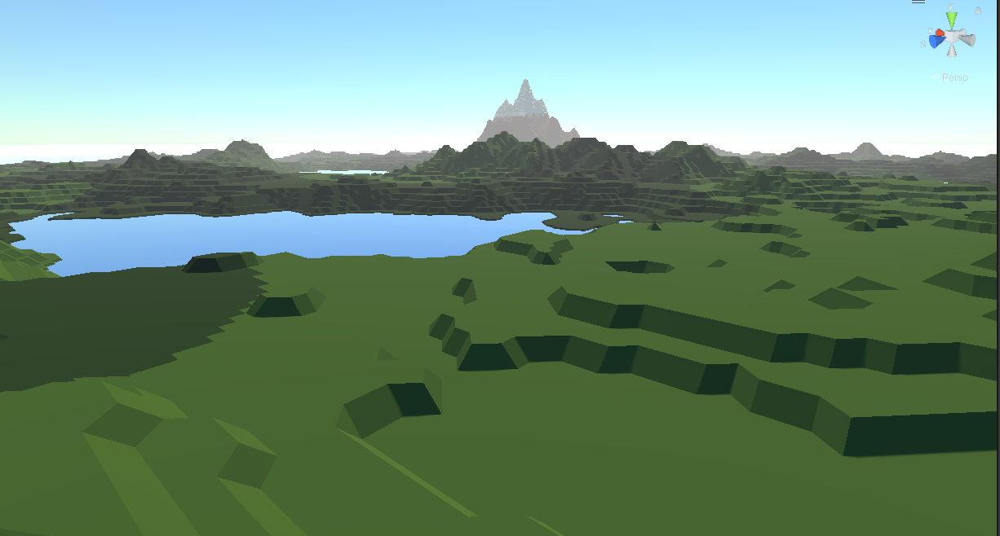

J'ai conçu et développé une multitude de jeux vidéo très variés, allant de simples jeux en 2D utilisant des formes primitives
à des jeux en 3D élaborés, en passant par la création de textures et la modélisation. J'ai également ajouté la fonctionnalité
multijoueur à l'un de mes jeux. Tous ces projets ont été réalisés en utilisant le moteur graphique Unity dans la langage C#.
Chaque jeu m'a confronté à des défis uniques, me poussant à repousser mes limites et à acquérir de nouvelles compétences dans le
domaine du développement de jeux. Ces expériences diverses m'ont permis d'explorer différentes mécaniques de jeu.
1ers jeux en 2D
J'ai commencé mon parcours en créant des jeux simples pour apprendre à coder en C# et à utiliser le logiciel Unity.
Initialement, j'ai conçu des jeux basiques mettant en scène des formes primitives, ce qui m'a permis de saisir les bases de la programmation.
Par la suite, j'ai exploré des techniques d'affichage plus avancées, telles que l'utilisation de lumières en 2D et le post-processing, afin d'enrichir l'aspect visuel de mes créations.
1ers jeux en 3D
J'ai également exploré la création de jeux en 3D, ce qui a nécessité d'adapter mes connaissances du développement en 2D pour intégrer une troisième dimension.
Par la suite, j'ai appris à modéliser des objets simples en 3D afin de les intégrer à mes jeux.
J'ai également approfondi mes compétences en apprenant des techniques plus avancées telles que le pathfinding, l'utilisation des lumières (baking), la gestion de plusieurs caméras et périphériques, notamment pour les écrans partagés.
Enfin, j'ai exploré la génération procédurale, comme illustré dans ce projet.

Publication
J'ai publié plusieurs jeux sur le Play Store, une expérience qui m'a permis d'appréhender les différentes étapes à suivre, telles que la création d'un site web, pour publier un jeu avec succès. Voir mon jeu
De plus, j'ai collaboré avec d'autres personnes sur des projets de jeu, offrant ainsi l'opportunité d'enseigner la programmation à d'autres passionnés.
Sur le côté, voici un bref extrait d'un jeu actuellement en développement. Nous sommes une équipe de trois, composée d'un dessinateur et d'un game designer, travaillant ensemble pour donner vie à notre vision du jeu.
Futur
J'aimerai publier un nouveau pour les platformes mobiles et PC.